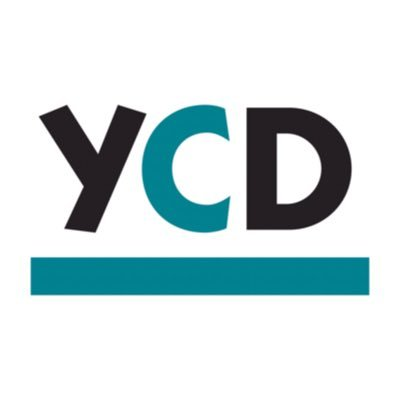

Summary
Hello, my name is Eduardo Guerrero and I am currently attending City College of San Francisco to obtain my CompTIA A+ certification. I have always enjoyed working with my hands as well as problem-solving. My previous work experience includes working at a restaurant as an Associate Trainer. During my time there I learned the importance of teamwork and customer service. Being bilingual definitely helped when communicating with the rest of my team since some of them only spoke spanish. After completing my current internship with Dev/Mission I am hoping to expand my skills and knowledge within the tech industry. I am looking for an entry level position as an IT technician. My long-term goal is to pursue a career as an ethical hacker or a computer forensics analyst.
Volunteering Experience
YCD (Young Community Developers)
Mentored younger Highschool students and helped them stay up to date with school assignments.
Additional Skills
Windows, Mac, Microsoft Office, Google Docs, HTML, CSS, Photoshop.
 Panera Bread | San Francisco, CA | Associate Trainer | May 2018- May 2019
Panera Bread | San Francisco, CA | Associate Trainer | May 2018- May 2019